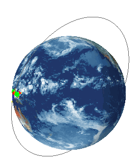

Use an Orbital Heating simulation object to model spacecraft, their systems, and components which undergo varying solar, albedo, and infrared heating in space using the orbit modeling capabilities of Space Systems Thermal.
You can define an orbit as a complete segment or partial orbit segments. You can also concatenate the segments to model orbital maneuvers. To do this, you must create multiple Orbital Heating simulation objects with each orbit segment defined by a different Orbit modeling object.
The Orbital Heating simulation object requests solar, Albedo, and planet view factor calculations for a spacecraft in a defined orbit. This radiation request takes into consideration, eclipses, movement of appendages, spacecraft rotation, and spinning. A radiosity approach is used to determine the reflection and absorption of the incident flux throughout the model. You can recover temperatures, orbital view factors, and heat fluxes for post processing and visualization.
To define an Orbital Heating simulation object:
Define a Thermo-Optical Properties – Advanced modeling object, for all elements on which you define an Orbital Heating simulation object. You must specify a value for Absorptivity under the Solar Properties group of the Thermo-Optical Properties – Advanced dialog box.
Define an Orbit modeling object, and any necessary articulations.
|
Tip |
To preview a defined orbit prior to solving the model, click Display in the Orbital Heating dialog box. To read a text summary of the defined orbital heating simulation object, click Information. |
